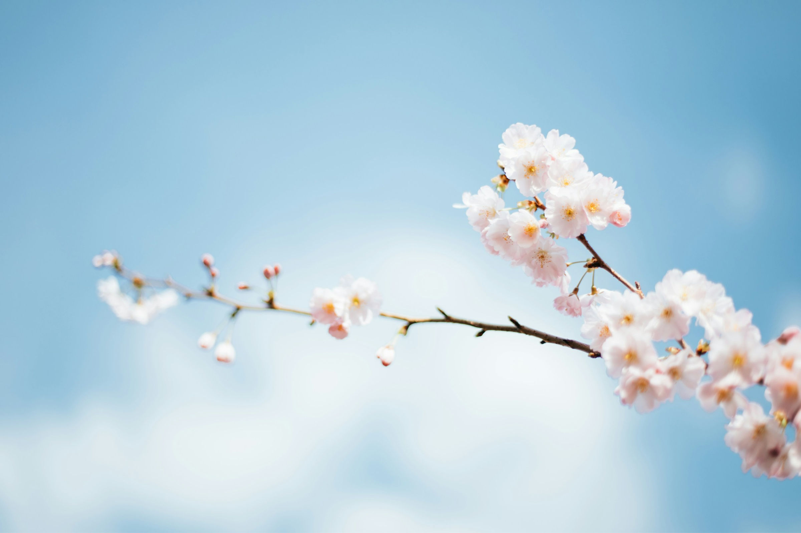
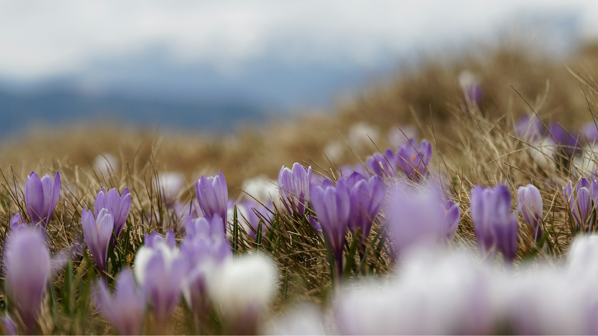

📖 Детальний опис
Весна — це не просто зміна температури, це глобальне перезавантаження екосистеми. Саме навесні активується рух соків у рослин, прокидаються комахи-запилювачі, а перелітні птахи повертаються до своїх гнізд. Для людини це період підвищення енергії та творчості.
💡 Порада сезону
Алергія: У період цвітіння берези та вільхи слідкуйте за рівнем пилку. Проветрюйте приміщення вранці та ввечері, коли концентрація алергенів найменша.
Важливі дати весни
Весняна галерея




📖 Детальний опис
Літній сезон характеризується найвищою сонячною активністю. Рослини досягають піку вегетації, формуючи плоди. Для людей літо — це біологічний час для синтезу вітаміну D, зміцнення імунітету та психологічного розвантаження через відпочинок на воді.
💡 Порада сезону
Захист: Використовуйте SPF-креми навіть у похмуру погоду. Пік ультрафіолетового випромінювання припадає на 11:00–16:00 — намагайтеся бути в тіні.
📅 Важливі дати літа
️ Літня галерея


📖 Детальний опис
Осінь — це час підготовки до спокою. Хлорофіл руйнується, оголюючи жовті та червоні пігменти листя. Тварини роблять запаси їжі, а люди збирають останній врожай. Це ідеальний час для інтроверсії, читання книг та планування майбутнього.
💡 Порада сезону
Імунітет: Введіть у раціон сезонні овочі: гарбуз, буряк, капусту. Вони багаті на клітковину та вітаміни, необхідні для підготовки організму до зими.
📅 Важливі дати осені
🍁 Осіння галерея


📖 Детальний опис
Зима — це період анабіозу для природи. Сніговий покрив діє як термоізолятор, захищаючи кореневі системи рослин від вимерзання. Для людини зима є часом соціальної активності всередині приміщень, святкування та підбиття підсумків року.
💡 Порада сезону
Шкіра: Мороз і опалення сушать шкіру. Використовуйте жирні креми за 30 хв до виходу на вулицю та обов'язково зволожуйте повітря в оселі.
Важливі дати зими
📷 Зимова галерея